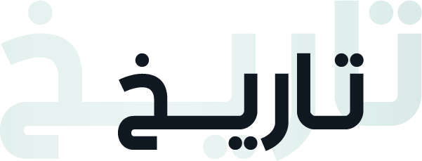

في 30
أغسطس
2008

كان خبراء الكبد في المملكة العربية السعودية يشاركون معرفتهم ويقدمون بياناتهم البحثية السريرية محليًا من خلال الأنشطة المختلفة لجمعية الجَهاز الهضمي السعودية التي تأسست عام 1988م. ومع التوسع المستمر في هذا المجال، أصبح من الواضح أن هناك حاجة إلى جمعية مستقلة لأمراض الكبد. وعلى الرغم من أن هذه الفكرة كانت تتألق في أذهان الكثيرين منذ بعض الوقت، إلا أنها لم تتحول إلى واقع إلا مؤخرًا. وقد أسفرت العديد من الاجتماعات والمناقشات الصارمة بين العديد من الأطباء المعنيين عن تحقيق هذا الخيار، وتم استشارة العديد من الآخرين للنظر في جميع الأفكار ذات الصلة. وأخيرًا، وصلت هذه الجهود إلى مرحلة إعلان تأسيس الجمعية السعودية لدراسة أمراض الكبد والزرع تحت مظلة المجلس السعودي للتخصصات الصحية، بعد استيفاء جميع اللوائح المطلوبة.